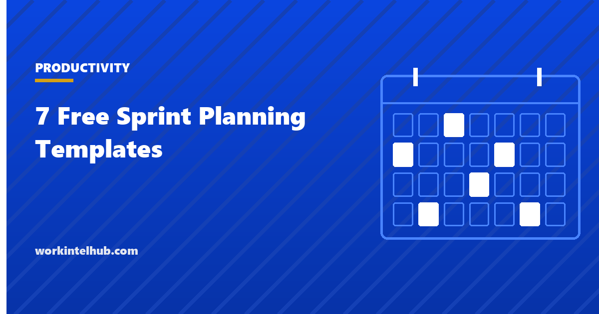

7 Free Sprint Planning Templates

Sprint planning is where an agile team decides what it will finish in the next one to four weeks, and the decision is only as good as two inputs: how much capacity the team actually has after leave, meetings and support work, and how well the stories at the top of the backlog are understood. Teams that skip the capacity arithmetic over-commit; teams that pull unready stories spend the sprint discovering what they meant.
Seven templates cover the meeting and the artefacts around it: a capacity calculator, a sprint goal and backlog sheet, a planning meeting agenda, a story-splitting worksheet, a definition of done checklist, a sprint review agenda and a retrospective record. The Excel version computes capacity in hours and points and compares it with the commitment.
Download the templates
Free files: Word, Excel and PDF
Three files, free, no email required. Word to edit, Excel to track, PDF to print or share.
Templates open in Microsoft Word, Excel, Google Docs and Sheets, LibreOffice and any PDF reader. Free to use and adapt for your organisation.
The seven templates
- Capacity calculator. Days available, hours and a focus factor per person, totalled and converted into a points target against velocity.
- Sprint goal and backlog. The goal in one sentence, then ranked stories with a readiness check and a committed flag.
- Planning meeting agenda. Two hours for a two-week sprint, with minutes per item.
- Story splitting worksheet. Six ways to split a story that is too big.
- Definition of done. Seven checks a story must pass before it counts.
- Review and retrospective. Agendas and a record with owned actions.
Capacity before commitment
The capacity calculator does the arithmetic teams skip. Ten working days, two people on leave for three days each, six hours of real work a day at a focus factor of 0.7 and the sprint has perhaps 230 hours, not the 400 a headcount suggests. Velocity, the points the team actually completed in recent sprints, is then scaled by the ratio of this sprint's capacity to a normal one to give a commitment target. A team that commits to its average velocity in a sprint with half its people on holiday will miss, and the miss will be read as a performance problem rather than an arithmetic one.
The team capacity planning guide applies the same logic outside agile teams.
Only ready stories enter a sprint
A story is ready when it has acceptance criteria the team can test, a size the team agreed, and no dependency that will block it mid-sprint. Stories that fail the check go back to refinement; pulling them in anyway is how sprints become discovery exercises. Stories that are ready but too large get split with the worksheet: by workflow step, business rule, data variation, interface, happy path before exceptions, or a spike followed by the build. Each split should still deliver something a user could notice.
The sprint goal protects the sprint from the stories. When a stakeholder asks for one more thing, the question is whether it serves the goal; if not, it waits for the next planning. The agile templates cover the product backlog that feeds planning and the burndown that tracks the result.
Done means done
- The definition of done applies to every story; a story that is "done except testing" is not done and does not count toward velocity.
- Keep it to seven or eight checks; a long definition is quietly ignored.
- Review it in the retrospective when stories keep coming back from the review.
- Product owner acceptance is the last check, not the first; the team's checks come before the demo.
Key takeaways
- Calculate capacity from days available, hours and a focus factor, then scale velocity to set the commitment; headcount is not capacity.
- A story enters the sprint only when it has acceptance criteria, an agreed size and no blocking dependency; split the big ones.
- The sprint goal, in one sentence, is what protects the sprint from additions.
- Done is defined by a short checklist applied to every story, and only done stories count.
Frequently asked questions
How do I calculate sprint capacity?
For each person, multiply the days available in the sprint by hours per day and a focus factor (the share of time on sprint work after meetings and support, typically 0.6 to 0.8). Total the hours. Then scale the team's average velocity by this sprint's capacity divided by a normal sprint's capacity to get a points target.
What is a sprint goal?
One sentence stating what the sprint will achieve and for whom, for example "customers can reset their password without contacting support". It gives the team a basis for deciding what to pull in and what to defer when things change mid-sprint.
How long should sprint planning take?
About two hours for a two-week sprint, split between agreeing the goal and selecting stories to capacity, and breaking stories into tasks. Planning that runs much longer usually means the backlog was not refined before the meeting.
What makes a story ready for a sprint?
Testable acceptance criteria, a size the team agreed, no dependency that will block it during the sprint, and small enough to finish within the sprint. Stories that fail any of these go back to refinement or get split.
What is a definition of done?
A short checklist every story must pass before it counts as complete: acceptance criteria met, code reviewed, tests passing, documentation updated, no serious open defects, deployed to the test environment, product owner accepted. It is the team's quality standard and should be the same for every story.